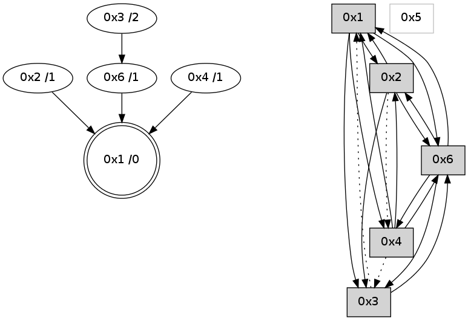

>> << IDX [start] -100 -25 -5 +0 +5 +25 +100 [650.224516153]
 Previous packets
----------------------------------------------------------------------
645.303435 beacon01(adaf) #0 coord=01,02,05,03,04,06 cycle=432.0ms assoc
-- color-indic=0 64 11 e3
645.313395 beacon02(adaf) #0 coord=01,02,05,03,04,06 cycle=432.0ms assoc 64 40 1c
645.323396 beacon05(adaf) #0 coord=01,02,05,03,04,06 cycle=432.0ms assoc 64 e6 36
645.333397 beacon03(adaf) #0 coord=01,02,05,03,04,06 cycle=432.0ms assoc 64 7a 12
645.343397 beacon04(adaf) #0 coord=01,02,05,03,04,06 cycle=432.0ms assoc 64 dc 38
645.353398 beacon06(adaf) #0 coord=01,02,05,03,04,06 cycle=432.0ms assoc 64 a8 24
645.365074 [Hello(6): seq=361 sym=3,1,2 sysInfo= stat=3:4,0,1,0/1:3,0,2,0/2:2,0,1,0]
----------------------------------------------------------------------
645.795543 beacon01(adaf) #0 coord=01,02,05,03,04,06 cycle=432.0ms assoc
-- color-indic=0 64 5c e4
645.805505 beacon02(adaf) #0 coord=01,02,05,03,04,06 cycle=432.0ms assoc 64 0d 1b
645.815506 beacon05(adaf) #0 coord=01,02,05,03,04,06 cycle=432.0ms assoc 64 ab 31
645.825504 beacon03(adaf) #0 coord=01,02,05,03,04,06 cycle=432.0ms assoc 64 37 15
645.835504 beacon04(adaf) #0 coord=01,02,05,03,04,06 cycle=432.0ms assoc 64 91 3f
645.845504 beacon06(adaf) #0 coord=01,02,05,03,04,06 cycle=432.0ms assoc 64 e5 23
645.856619 [Hello(1): seq=346 sym=2,6 sysInfo= stat=2:7,0,1,0/6:15,0,2,0]
645.860848 [Hello(2): seq=941 sym=6,1,3 sysInfo= stat=6:0,0,1,0/1:8,0,1,0/3:1,0,1,0]
645.862646 [Hello(4): seq=447 sym=3,1 asym=6 sysInfo= stat=3:1,0,1,0/1:0,0,1,0/6:2,0,1,0]
----------------------------------------------------------------------
646.287653 beacon01(adaf) #0 coord=01,02,05,03,04,06 cycle=432.0ms assoc
-- color-indic=0 64 98 8b
646.297614 beacon02(adaf) #0 coord=01,02,05,03,04,06 cycle=432.0ms assoc 64 c9 74
646.307616 beacon05(adaf) #0 coord=01,02,05,03,04,06 cycle=432.0ms assoc 64 6f 5e
646.317614 beacon03(adaf) #0 coord=01,02,05,03,04,06 cycle=432.0ms assoc 64 f3 7a
646.327614 beacon04(adaf) #0 coord=01,02,05,03,04,06 cycle=432.0ms assoc 64 55 50
646.337616 beacon06(adaf) #0 coord=01,02,05,03,04,06 cycle=432.0ms assoc 64 21 4c
646.349304 [Hello(6): seq=362 sym=3,4,1,2 sysInfo= stat=3:5,0,1,0/4:0,0,0,0/1:4,0,2,0/2:2,0,1,0]
646.355603 [STC(1) #0.3 to-color d=0]
----------------------------------------------------------------------
646.779761 beacon01(adaf) #0 coord=01,02,05,03,04,06 cycle=432.0ms assoc
-- color-indic=0 64 d4 3b
646.789721 beacon02(adaf) #0 coord=01,02,05,03,04,06 cycle=432.0ms assoc 64 85 c4
646.799721 beacon05(adaf) #0 coord=01,02,05,03,04,06 cycle=432.0ms assoc 64 23 ee
646.809721 beacon03(adaf) #0 coord=01,02,05,03,04,06 cycle=432.0ms assoc 64 bf ca
646.819723 beacon04(adaf) #0 coord=01,02,05,03,04,06 cycle=432.0ms assoc 64 19 e0
646.829724 beacon06(adaf) #0 coord=01,02,05,03,04,06 cycle=432.0ms assoc 64 6d fc
646.841247 [STC(6)->1 #0.3 to-color d=1]
646.842767 [Hello(1): seq=347 sym=2,4,6 sysInfo= stat=2:8,0,1,0/4:0,0,0,0/6:15,0,2,0]
646.845136 [Hello(4): seq=448 sym=6 asym=3,1 sysInfo= stat=6:3,0,1,0/3:1,0,1,0/1:0,0,2,0]
646.847116 [Hello(2): seq=942 sym=6,1 asym=4,3 sysInfo= stat=6:1,0,1,0/1:8,0,2,0/4:0,0,0,0/3:1,0,1,0]
646.850332 [STC(2)->1 #0.3 to-color d=1]
----------------------------------------------------------------------
647.271868 beacon01(adaf) #0 coord=01,02,05,03,04,06 cycle=432.0ms assoc
-- color-indic=0 64 10 54
647.281829 beacon02(adaf) #0 coord=01,02,05,03,04,06 cycle=432.0ms assoc 64 41 ab
647.291829 beacon05(adaf) #0 coord=01,02,05,03,04,06 cycle=432.0ms assoc 64 e7 81
647.301829 beacon03(adaf) #0 coord=01,02,05,03,04,06 cycle=432.0ms assoc 64 7b a5
647.311829 beacon04(adaf) #0 coord=01,02,05,03,04,06 cycle=432.0ms assoc 64 dd 8f
647.321830 beacon06(adaf) #0 coord=01,02,05,03,04,06 cycle=432.0ms assoc 64 a9 93
647.333374 [STC(4)->2-.->1 #0.3 to-color d=2]
647.337186 [Hello(6): seq=363 sym=3,4,1,2 sysInfo= stat=3:6,0,1,0/4:0,0,0,0/1:5,0,3,0/2:3,0,2,0]
----------------------------------------------------------------------
647.763977 beacon01(adaf) #0 coord=01,02,05,03,04,06 cycle=432.0ms assoc
-- color-indic=0 64 c8 10
647.783938 beacon05(adaf) #0 coord=01,02,05,03,04,06 cycle=432.0ms assoc 64 3f c5
647.813940 beacon06(adaf) #0 coord=01,02,05,03,04,06 cycle=432.0ms assoc 64 71 d7
647.825081 [Hello(1): seq=348 sym=2,4,3,6 sysInfo= stat=2:9,0,2,0/4:0,0,1,0/3:0,0,0,0/6:0,0,2,0]
647.829107 [Hello(4): seq=449 sym=6,2 asym=3,1 sysInfo= stat=6:4,0,1,0/2:0,0,1,0/3:1,0,1,0/1:0,0,2,0]
----------------------------------------------------------------------
648.256085 beacon01(adaf) #0 coord=01,02,05,03,04,06 cycle=432.0ms assoc
-- color-indic=0 64 0c 7f
648.266045 beacon02(adaf) #0 coord=01,02,05,03,04,06 cycle=432.0ms assoc 64 5d 80
648.276046 beacon05(adaf) #0 coord=01,02,05,03,04,06 cycle=432.0ms assoc 64 fb aa
648.286046 beacon03(adaf) #0 coord=01,02,05,03,04,06 cycle=432.0ms assoc 64 67 8e
648.296047 beacon04(adaf) #0 coord=01,02,05,03,04,06 cycle=432.0ms assoc 64 c1 a4
648.306046 beacon06(adaf) #0 coord=01,02,05,03,04,06 cycle=432.0ms assoc 64 b5 b8
648.317761 [Hello(2): seq=943 sym=6,1,3 asym=4 sysInfo= stat=6:2,0,1,0/1:9,0,2,0/3:2,0,1,0/4:0,0,1,0]
----------------------------------------------------------------------
648.748192 beacon01(adaf) #0 coord=01,02,05,03,04,06 cycle=432.0ms assoc
-- color-indic=0 64 40 cf
648.758152 beacon02(adaf) #0 coord=01,02,05,03,04,06 cycle=432.0ms assoc 64 11 30
648.768153 beacon05(adaf) #0 coord=01,02,05,03,04,06 cycle=432.0ms assoc 64 b7 1a
648.778153 beacon03(adaf) #0 coord=01,02,05,03,04,06 cycle=432.0ms assoc 64 2b 3e
648.788154 beacon04(adaf) #0 coord=01,02,05,03,04,06 cycle=432.0ms assoc 64 8d 14
648.798153 beacon06(adaf) #0 coord=01,02,05,03,04,06 cycle=432.0ms assoc 64 f9 08
648.809878 [Hello(4): seq=450 sym=6,2 asym=3,1 sysInfo= stat=6:5,0,1,0/2:0,0,1,0/3:1,0,1,0/1:0,0,2,0]
648.815127 [Hello(1): seq=349 sym=2,4,3,6 sysInfo= stat=2:10,0,2,0/4:0,0,1,0/3:1,0,0,0/6:0,0,2,0]
648.817609 [STC(1) #0.4 to-color d=0]
----------------------------------------------------------------------
649.240301 beacon01(adaf) #0 coord=01,02,05,03,04,06 cycle=432.0ms assoc
-- color-indic=0 64 84 a0
649.250262 beacon02(adaf) #0 coord=01,02,05,03,04,06 cycle=432.0ms assoc 64 d5 5f
649.260262 beacon05(adaf) #0 coord=01,02,05,03,04,06 cycle=432.0ms assoc 64 73 75
649.270262 beacon03(adaf) #0 coord=01,02,05,03,04,06 cycle=432.0ms assoc 64 ef 51
649.280262 beacon04(adaf) #0 coord=01,02,05,03,04,06 cycle=432.0ms assoc 64 49 7b
649.290263 beacon06(adaf) #0 coord=01,02,05,03,04,06 cycle=432.0ms assoc 64 3d 67
649.301802 [STC(4)->1 #0.4 to-color d=1]
649.305867 [Hello(2): seq=944 sym=6,1,3 asym=4 sysInfo= stat=6:2,0,1,0/1:10,0,3,0/3:3,0,1,0/4:0,0,1,0]
649.309626 [STC(6)->1 #0.4 to-color d=1]
649.313373 [STC(2)->1 #0.4 to-color d=1]
----------------------------------------------------------------------
649.732409 beacon01(adaf) #0 coord=01,02,05,03,04,06 cycle=432.0ms assoc
-- color-indic=0 64 c9 a7
649.742369 beacon02(adaf) #0 coord=01,02,05,03,04,06 cycle=432.0ms assoc 64 98 58
649.752371 beacon05(adaf) #0 coord=01,02,05,03,04,06 cycle=432.0ms assoc 64 3e 72
649.762371 beacon03(adaf) #0 coord=01,02,05,03,04,06 cycle=432.0ms assoc 64 a2 56
649.772370 beacon04(adaf) #0 coord=01,02,05,03,04,06 cycle=432.0ms assoc 64 04 7c
649.782370 beacon06(adaf) #0 coord=01,02,05,03,04,06 cycle=432.0ms assoc 64 70 60
649.793841 [Hello(1): seq=350 sym=2,4,3,6 sysInfo= stat=2:10,0,3,0/4:0,0,1,0/3:1,0,1,0/6:0,0,3,0]
649.797718 [Hello(4): seq=451 sym=6,1,2 asym=3 sysInfo= stat=6:5,0,2,0/1:1,0,3,0/2:1,0,2,0/3:1,0,1,0]